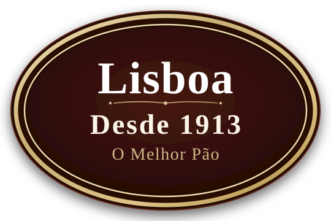

★ Tradição Centenária • Desde 1913
A mesma qualidade da padaria, no app que você preferir
Mais de um século de forno aquecido na Praça Silvio Romero. Do pão quentinho crocante aos doces clássicos portugueses, selecione seu canal favorito e receba em minutos na sua mesa.
Escolher Onde Pedir
Nossas Fornadas & Sabores
O aroma inconfundível que conquista gerações
Receitas com técnica artesanal, fermentação no ponto e os melhores ingredientes de São Paulo.


Peça do seu Jeito
Onde você quer pedir?
Clique no seu aplicativo preferido para abrir o cardápio e receber tudo quentinho e fresco sem perder tempo.
Nossa Alma Centenária
Mais de um século de sabor e respeito à nossa história
Em 1913, no coração vibrante do Tatuapé, nascia a Padaria Lisboa diante da tradicional Praça Silvio Romero. Desde o primeiro forninho a lenha do início do século XX até a tecnologia de pedidos de hoje, mantivemos intacta a nossa maior riqueza: a receita de família, a fermentação respeitada e o abraço caloroso em cada cliente.
Hoje conduzida com orgulho pela 4ª geração da mesma família, a Padaria Lisboa é ponto de encontro, memória afetiva de avós, pais e filhos, e referência do pão de qualidade que só quem ama o que faz consegue assar.
"Não vendemos apenas pães e cafés: servimos a tradição e o conforto do lar de gerações de moradores do Tatuapé."
0
Ano de Fundação
Nascida junto com o desenvolvimento do bairro do Tatuapé.
0
Geração de Família
O mesmo carinho e segredos de receitas mantidos de pai para filho.
0
Anos de História
Mais de um século servindo São Paulo na Praça Silvio Romero.
Ponto de Encontro
Venha sentir o aroma de perto
Estamos no endereço mais charmoso do Tatuapé, em frente à Praça Silvio Romero.
Informações & Balcão
Endereço
Praça Silvio Romero, Tatuapé
São Paulo - SP, CEP 03323-000
Horário de Funcionamento
Todos os dias, das 6h às 22h
Telefone & Encomendas
WhatsApp: (11) 96601-9392
Telefones Balcão: (11) 2295-9444 / (11) 2293-1378
Atendimento para encomendas de bolos, pães e cestas.